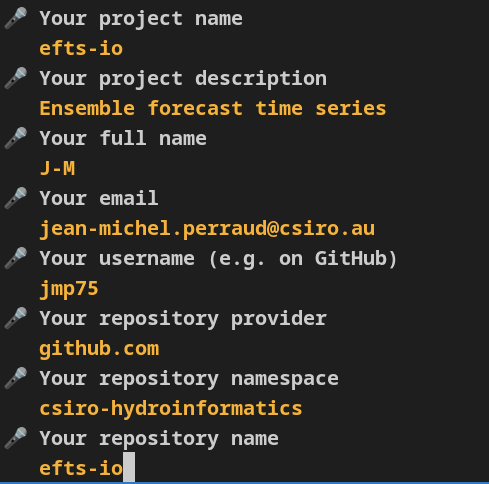

Background
A follow up post on python packaging. See the previous post for context and background.
Many templates can come with unnecessary cognitive overheads for many use cases: fastapi, celery and whatnot. I decided to give a try to copier-uv by the author of mkdocs. Some of the tools, such as uv and ruff, are ones I think are a good bet for the coming years of development for several projects. Other features, well I will have to see if the fit the bill or at least are not “in the way”. The template usage documentation is very solid, a strong point.
Trialling
My case study efts-python currently has two packages in one git repo. I will migrate to one repository per package, which amongst other things is typically an implicit assumption of most packaging templates.
Installing
Follow the instructions in copier-uv docs. Do try to stick to it. I first tried to work from a conda environment as a baseline, with uv, ruff and other stuff installed. Then mamba activate devbase ; cd /path/to/project ; source ./.venv/bin/activate ; uv pip install blah. But at usage time I found it confusing when doing uv pip install where these packages ended up installed.
So, instead going down the standalone install route (after all, take advantage of uv and ruff being written in rust and not depending on python…)
curl -LsSf https://astral.sh/uv/install.sh | sh
curl -LsSf https://astral.sh/ruff/install.sh | sh
echo 'eval "$(uv generate-shell-completion bash)"' >> ~/.bashrcpyenv
As mentioned above, working from a conda env somehow did not pan out, not that I imply conda itself was an issue at all. So, following the docs and giving a try to pyenv; not sure what the overall benefit will be, but no reasons not to give a try.
Do not install python versions with pyenv from within an already created package structure. It will likely have a direnv set up as per copier-uv docs, and pyenv install 3.12.x may lead to: ValueError: make: activate: Cannot find activation script in .venv. Make sure you set up pyenv outside of this package directory if you do not follow the install instructions in the prescribed order as I did finding my way around.
So, as per the instructions:
# install pyenv
git clone https://github.com/pyenv/pyenv ~/.pyenv
# setup pyenv (you should also put these three lines in .bashrc or similar)
export PATH="${HOME}/.pyenv/bin:${PATH}"
export PYENV_ROOT="${HOME}/.pyenv"
eval "$(pyenv init -)"
# install Python 3
# check the available versions installable
pyenv install --list | less # search /3.12
# CAUTION: do NOT do this in a package subdirectory that has a virtual environment activated
pyenv install 3.12.5# make it available globally
pyenv global 3.12.5
# finally, restart your shell
# to make sure your environment is up-to-dateInstall pipx and copier, as per the requirements.
# check:
which python
pip install --user pipx
pipx install copier
pipx inject copier copier-templates-extensionsCreating the package structure from the template
First, since I do not start from scracth, what do I have to start from in the package as it previously existed.
cp -r ${HOME}/src/previous/path/efts-io ${HOME}/src/efts-io
with existing assets:
contributing.md docs efts_io LICENSE.txt MANIFEST.in nocommit README.md requirements.txt setup.cfg setup.py testscopier will ask for confirmation if something is about to be overwritten. Also, I have a back up in the original codebase, worse comes to worse.
copier copy --trust "gh:pawamoy/copier-uv" ${HOME}/src/efts-io
Let us see if we can remove of legacy files we do not wish to keep. ls -lt to
rm contributing.md MANIFEST.in LICENSE.txt setup.*
Working with copier-uv
Setting up direnv – unclutter your .profile. It is an appealing prospect.
Being on a Debian box: apt search direnv, yep, and sudo apt install direnv
Configure direnv for bash.
Restart vscode or the command line, to be sure .bashrc is reloaded. Overkill, but better use a clean slate.
cd ${HOME}/src/efts-io
direnv: error /home/xxxyyy/src/efts-io/.envrc is blocked. Run `direnv allow` to approve its contentPYTHON_VERSIONS
I initially tried several versions as per the doc suggesting this via the PYTHON_VERSIONS env var., but had issues down the track. Maybe works only if the specified versions have been indeed been installed via pyenv. Keep in log notes for now ans see if I need to sanitise for blog post.
#export PYTHON_VERSIONS="3.9 3.10 3.11 3.12"
export PYTHON_VERSIONS="3.12"Typically one would use, one off when starting the daily work, make setup. I do the sub-steps for didactic purposes:
uv venv:
Using Python 3.12.5 interpreter at: /home/xxxyyy/.pyenv/versions/3.12.5/bin/python3
Creating virtualenv at: .venv
Activate with: source .venv/bin/activateI foresee I will need to test or document the package from notebooks, so I need to add at least ipykernel to devdeps.txt. jupyterlab could be convenient, but I already have envs I can start from for the front end.
# notebooks
ipykernel>=6.29.5
# jupyterlab>=4.2.5
nbstripout>=0.7.1
jupytext>=1.16.4
# Note to self: consider nbstripout-fast 1.0.4uv pip install -r devdeps.txt
Dependencies and virtual environments
I may as well specify the correct dependencies.
pyproject.toml
[build-system]
requires = ["pdm-backend"]
build-backend = "pdm.backend"Wait what? why PDM? OK, let’s see where it leads.
[project]
dependencies = [
"pandas",
"numpy",
"xarray",
"cftime",
]make setup is mostly working, but only if you have installed pyenv. It creates environments/versions of python you have in the env var PYTHON_VERSIONS.
Installed 1 package in 1ms
+ efts-io==0.1.dev0 (from file:///home/xxxyyy/src/efts-io)Note that if you do NOT have pyenv, you will get:
Installing dependencies (python3.9)
× No interpreter found for Python 3.9 in system pathexport PYTHON_VERSIONS="3.10 3.11 3.12"
make clean
make setupInstalling dependencies (python3.10)
× No interpreter found for Python 3.10 in system pathEDIT: pyenv…
I don’t really understand what to do about it. Maybe later.
export PYTHON_VERSIONS="3.12"
make clean
make setupHurray!
xxxyyy@mymachine:~/src/efts-io$ ls .venvs
3.10 3.11 3.12 3.9Except, this modifies the devbase environment. Should have done
cd ~/src/efts-io
source .venv/bin/activate
export PYTHON_VERSIONS="3.12"
make clean
make setupHow was .venv created? cannot recall.
Recreate mamba env
mamba create -n devbase copier uv pipx pdmcd ~/src/efts-io
source .venv/bin/activate
export PYTHON_VERSIONS="3.12"now what
uv pip install -r devdeps.txt, but .venv was already created by make setup. Am still a bit confused why the mamba env was touched.
export PYTHON_VERSIONS="3.12"
make check-types
make check-quality Found 84 errors.
Checking that there is no .vscode folder
Time for a first commit
Very much a work in progress, lots of things to fix, but time to commit still.
git status
There are already some things rightly in the .gitignore file, like under .venv.
.copier-answers.yml
.envrc
.github/
.gitignore
.gitpod.dockerfile
.gitpod.yml
CHANGELOG.md
CODE_OF_CONDUCT.md
CONTRIBUTING.md
LICENSE
Makefile
config/
devdeps.txt
docs/
duties.py
efts_io/
mkdocs.yml
pyproject.toml
requirements.txt
scripts/
src/
tests/Worth noting the src/efts_io folder, which I am not used to so far (basically I did away with src). The structure is helpfully described at working-on-a-project, confirming that I thought.
# Keep the new __init__.py, the old one empty anyway
mv --no-clobber efts_io/* src/efts_io/make check-quality
Found 512 errors.
[*] 92 fixable with the `--fix` option (73 hidden fixes can be enabled with the `--unsafe-fixes` option).OK let us try --fix. Assuming this is a ruff option, but ruff in not available as a command, nor installed in the venv. Yet it is in devdeps.txt. Confusing… uv pip install ruff seems to correct this. But still not clear where the –fix o0ption is.
OK, ruff check --fix seems to be it.
Found 75 errors (15 fixed, 60 remaining). BTW should probably have commited first…
Note that ruff check now finds 60 issues, but make check-quality still ~500 so this is more stringent. not sure what options make it more stringent, not clear from ruff help check
OK, git it: ruff check --config config/ruff.toml
ruff check --config config/ruff.toml --fix
Time so set up vscode. ruff extension
Update ~/.config/Code - Insiders/User/settings.json which has a deprecated linter. Been bugging me for a while but was unclear how to fix. Good incentive now. See settings at https://marketplace.visualstudio.com/items?itemName=charliermarsh.ruff#rust-based-language-server
"[python]": {
"editor.formatOnSave": true,
"editor.defaultFormatter": "charliermarsh.ruff",
"editor.codeActionsOnSave": {
"source.organizeImports": "explicit",
"source.fixAll": "explicit", }
},While at it: "python.condaPath": "/home/xxxyyy/miniforge3/bin/mamba"
However a few days later, no syntax highlighting anymore in vscode, and not sure why.
On a hunch googling and finding this SO post , trying ln --symbolic ./config/ruff.toml ./ruff.toml, and surprise, I get the squiggly lines back in vscode.
Developing the package
Want to have a notebook to elaboreate. Need to register the venv as a kernel.
uv pip install ipykernel
jupyter kernelspec list
python -m ipykernel install --name efts_io --display-name "EFTS-IO" --userbut after uv pip install -e I cannot seem to be able to import subpackages.
import efts_io as e
dir(e)
# ['__all__',
# '__annotations__',
# other dunder variables
# 'annotations']
e.__file__'/home/xxxyyy/src/efts-io/src/efts_io/__init__.py'
I note that:
# package __init__.py
from __future__ import annotations
__all__: list[str] = []I thought I may need to manage the content of __all__, a bit like nbdev generates this, but I doubt it. I’ve not used this in most packages. __all__ should be only for wildcard imports to only export public API points
in my swift package I had for instance in setup.py
packages=['swift2','swift2.wrap'],but here I use pyproject.toml, and pdm as build backend not setuptools. So, what do I need to do?
Another case of frustration with the python ecosystem. Just give me the template that works, I’m OK learning some stuff but don’t want to have to learn the whole bazaar.
Oh, no.. import efts_io.wrapper as w seems to work. Not sure why dir(e) does not show submodules, nor tab in jupyter notebook.
I need a netcdf backend for xarray. So:
uv add netCDF4
warning: `uv add` is experimental and may change without warning
Resolved 14 packages in 638ms
Built efts-io @ file:///home/xxxyyy/src/efts-io
error: Failed to prepare distributions
Caused by: Failed to fetch wheel: numpy==1.24.4
Caused by: Failed to build: `numpy==1.24.4`
Caused by: Build backend failed to determine extra requires with `build_wheel()` with exit status: 1
stderr;
ModuleNotFoundError: No module named 'distutils'waitwaitwait… installed numpy is 2.0.x, why downgrade?? Besides, I know of a breaking change in numpy, from another project.
Forget, not sure what is going on (is distutils not totally obsolete??)
In the pyproject.toml I have
dependencies = [
"pandas",
"numpy",
"xarray",
"cftime",
"netcdf4>=1.7.1.post2",
]but uv pip tree does not list netcdf4
uv pip install netcdf4
CI
First few commits, the github actions report multiple errors.
Starting with quality checks, the first tripping. Warnings are treated as errors, so this needs fixing or a workaround:
WARNING - The following pages exist in the docs directory, but are not included in the "nav" configuration:
- code-reference.md
- tech_notes.mdMore unexpected, make setup fails, and it is rather puzzling that a pandas version 0.1 is sought. I may want to pin versions in any case, but why this behavior was not apparent locally is odd.
Run make setup
make setup
shell: /usr/bin/bash --noprofile --norc -e -o pipefail {0}
env:
LANG: en_US.utf-8
LC_ALL: en_US.utf-8
PYTHONIOENCODING: UTF-8
PYTHON_VERSIONS:
pythonLocation: /opt/hostedtoolcache/Python/3.12.5/x64
PKG_CONFIG_PATH: /opt/hostedtoolcache/Python/3.12.5/x64/lib/pkgconfig
Python_ROOT_DIR: /opt/hostedtoolcache/Python/3.12.5/x64
Python2_ROOT_DIR: /opt/hostedtoolcache/Python/3.12.5/x64
Python3_ROOT_DIR: /opt/hostedtoolcache/Python/3.12.5/x64
LD_LIBRARY_PATH: /opt/hostedtoolcache/Python/3.12.5/x64/lib
UV_RESOLUTION: lowest-direct
Using Python 3.12.5 interpreter at: /opt/hostedtoolcache/Python/3.12.5/x64/bin/python
Creating virtualenv at: .venv
warning: The direct dependency `pandas` is unpinned. Consider setting a lower bound when using `--resolution-strategy lowest` to avoid using outdated versions.
warning: The direct dependency `numpy` is unpinned. Consider setting a lower bound when using `--resolution-strategy lowest` to avoid using outdated versions.
warning: The direct dependency `xarray` is unpinned. Consider setting a lower bound when using `--resolution-strategy lowest` to avoid using outdated versions.
warning: The direct dependency `cf-xarray` is unpinned. Consider setting a lower bound when using `--resolution-strategy lowest` to avoid using outdated versions.
warning: The direct dependency `pint-xarray` is unpinned. Consider setting a lower bound when using `--resolution-strategy lowest` to avoid using outdated versions.
warning: The direct dependency `cftime` is unpinned. Consider setting a lower bound when using `--resolution-strategy lowest` to avoid using outdated versions.
error: Failed to download and build `pandas==0.1`
Caused by: Build backend failed to determine extra requires with `build_wheel()` with exit status: 1
--- stdout:Troubleshooting
Previously on make setup I had encountered an error such as the following. I thought this was clearly to do with PDM not being installed as a package, but in the end the root cause was elsewhere (git init).
error: Failed to build `efts-io @ file:///home/xxxyyy/src/efts-io`
Caused by: Failed to build: `efts-io @ file:///home/xxxyyy/src/efts-io`
Caused by: Build backend failed to determine metadata through `prepare_metadata_for_build_editable` with exit status: 1
pdm.backend.exceptions.ConfigError: Cannot find the version from SCM or SCM isn't detected.
You can still specify the version via environment variable `PDM_BUILD_SCM_VERSION`, or specify `fallback_version` config.tried (previously using a base mamba env)
mamba install pdm make setup
Nope, same error.
[tool.pdm]
version = {source = "scm"}https://pdm-project.org/en/latest/
Could it be https://setuptools-scm.readthedocs.io/en/latest/
I may be not the only one confused
Long shot, but let us try mamba install setuptools-scm. Nope.
Oh, wait… https://backend.pdm-project.org/metadata/ “Read from SCM tag, supporting git and hg”. But I’ve not created a git repo yet; no git init yet
And… yes it solves the issue.